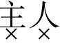

静农兄：
日前寄上书籍二包，又字一卷[163]，不知已收到否？字写得坏极，请勿裱挂，为我藏拙也。
来函及小说两本又画报[164]一份，均收到。照相能得到原印片一份，则甚感。大约问师大学生自治会中人，当能知道的。记文[165]甚怪，中有“新的

”云云，我实在没有说过这样一句话。此上，即颂
近好。
迅 上 十二月十三夜
注 释
[163] 字一卷 鲁迅1932年12月9日日记：“为静农写一横幅。”
[164] 画报 指《世界画报》第三六四期（1932年12月4日），其中刊有以《鲁迅在师大》为题的照片五帧。
[165] 记文 指《再论“第三种人”》的讲演记录。